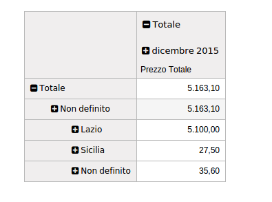

Funzioni principali del modulo
Questo modulo aggiunge le statistiche riguardanti:
Sotto la voce: Reportistica
la regione e provincia dei clienti, la regione e provincia della destinazione merce e il prezzo totale scontato.


Sotto la voce: Reportistica
Selezionando quindi le quattro voci aggiunte, verranno visualizzati gli opportuni dati:
Nel seguente esempio, viene selezionata la voce "Regione cliente":

Inoltre nel menú "Misure", é stata aggiunta la voce: "Prezzo Totale Scontato":